Internal tools
CMS
2022
Internal Reviews System
A ground-up rebuild of Wix App Market's internal review platform, after the team had abandoned it for spreadsheets and Google Docs.
The problem
Wix App Market's internal review platform is the tool Account Managers use to evaluate and approve apps before they go live, spanning four interconnected product areas.
When I joined, the team had stopped using it, and it wasn't updated or fixed. Review work was scattered across personal Google Docs, with no shared history, no visibility between submissions, and no consistent handoffs. As the team grew and more apps were submitted, that stopped being sustainable. The cycle shows what the process actually looked like.
App review cycle
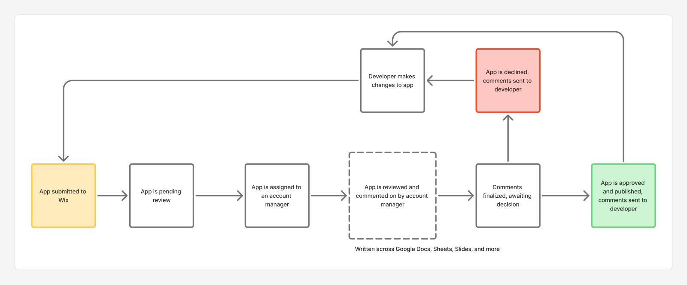
Research
Met with Account Managers to walk through the current system, shadowed them running actual reviews, audited the Docs and Sheets they were using instead, and pulled analytics on time to publish and how many resubmissions an app typically needed. That surfaced:
- Confusing UI in the current system
- Difficulty writing a consistent review
- Weak information architecture
- No integrated workflow
Together, these caused longer review times and slower cycles across the team.
Deciding on scope
Before designing any screens, I mapped the product into four areas, building on Wix's own UI system to fix the confusing-UI complaint at the platform level first.
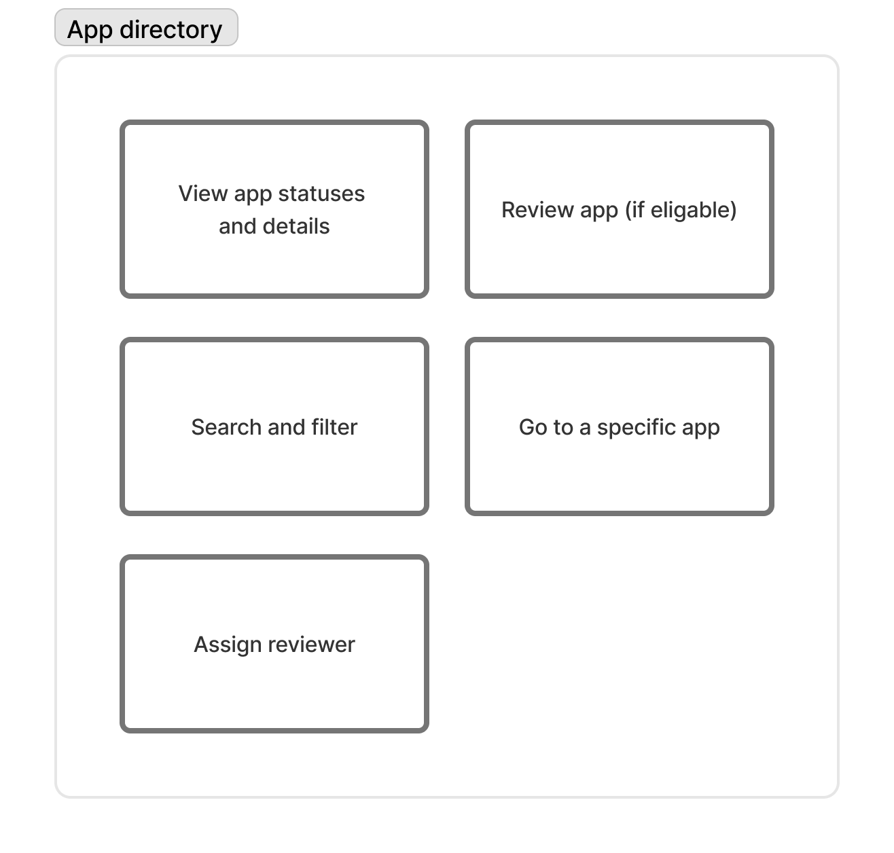
App directory and queueBrowse, filter, and assign every app across all review stages. A structural makeover to fix the weak information architecture.
App pageOne app's full history, team, and status in a single view. Closed the no-integrated-workflow gap.
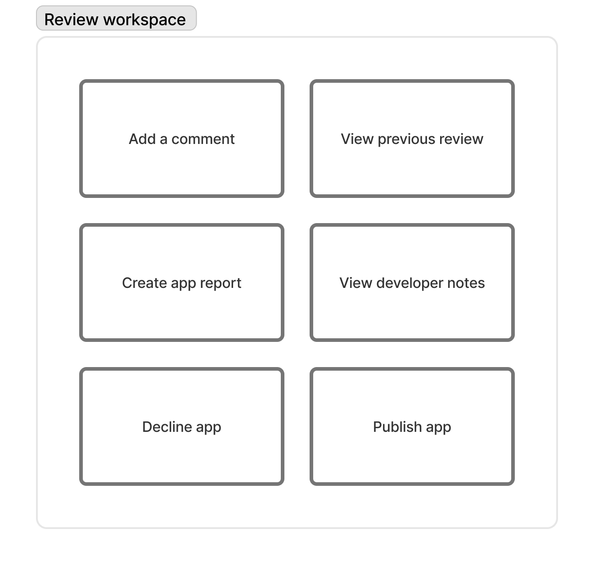
Review workspaceBuilt from scratch to replace ad-hoc Google Doc reviews. Solves the difficulty of writing a consistent review.
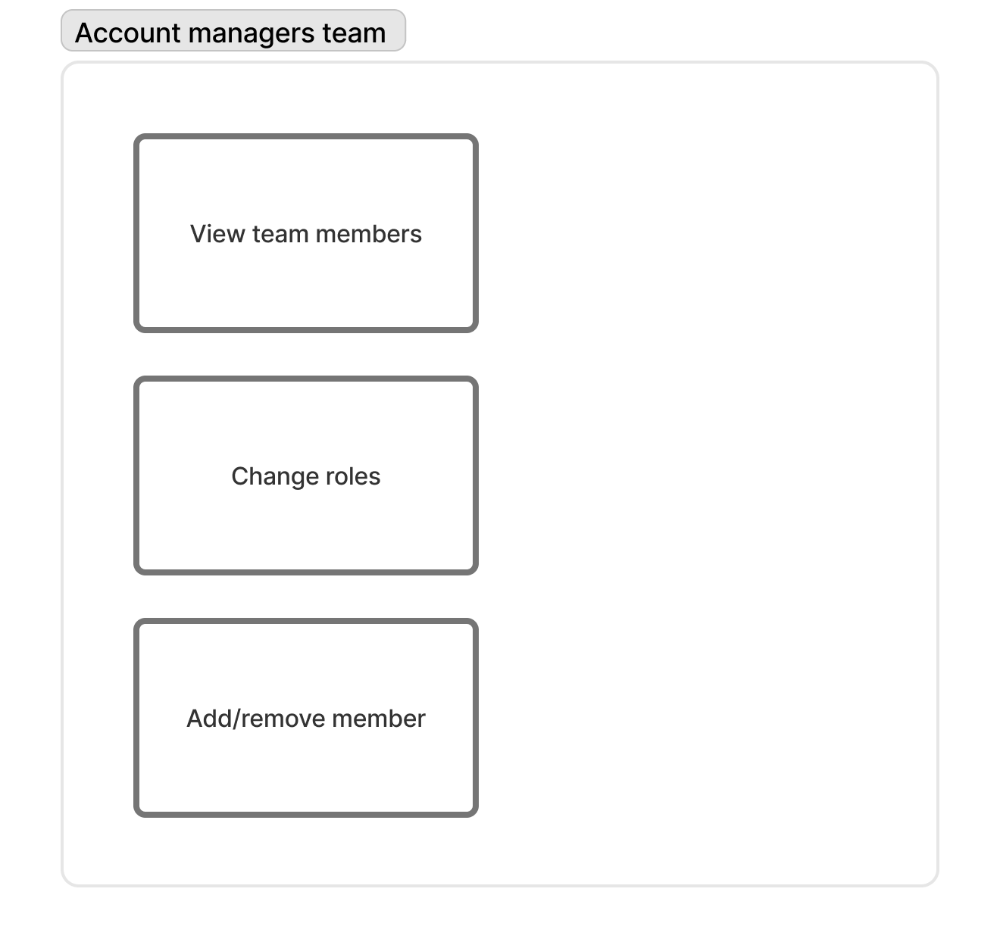
Team managementRole-based access and reviewer assignments across the team. Closes the handoff gap between reviewers.
Apps directory & review queue
The full marketplace directory, across all stages. One queue that replaced the spreadsheet tracking account managers had built for themselves.
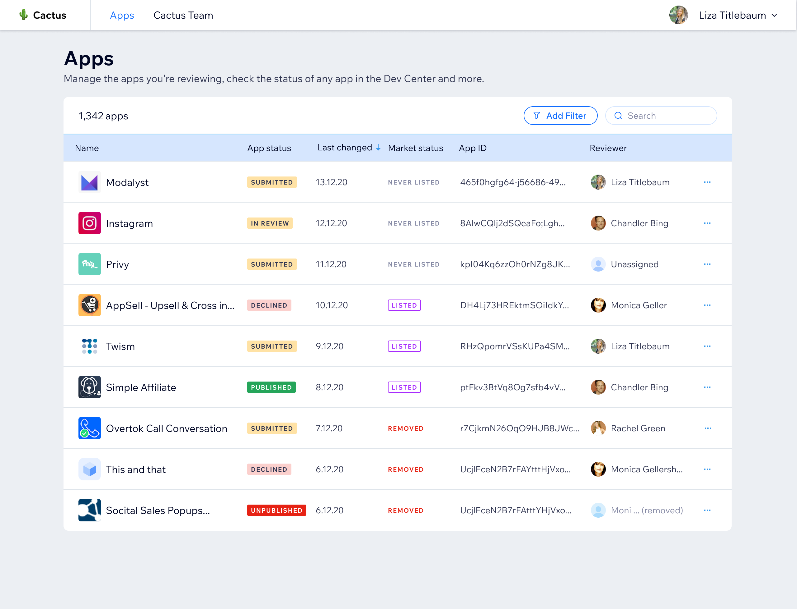
Dashboard: Status, last change, market status, reviewerThe single source of truth reviewers didn't have before.
 Filtering by status and market listingBuilt to hold up as submission volume grows, not just today's backlog.
Filtering by status and market listingBuilt to hold up as submission volume grows, not just today's backlog.
App page
Submission history, team notes, and current status in one place. What used to live scattered across personal Docs now sits in one centralized location.
 Per-app activity logAnswers what Google Docs couldn't: what changed, when, and by whom.
Per-app activity logAnswers what Google Docs couldn't: what changed, when, and by whom.
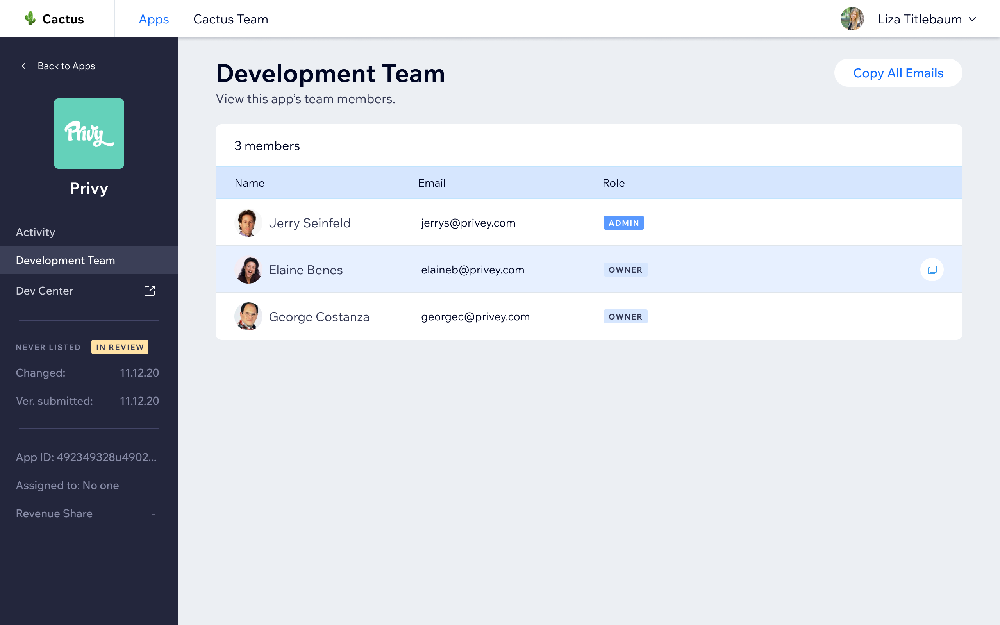
App team viewWho's building it, so a handoff doesn't start from zero.
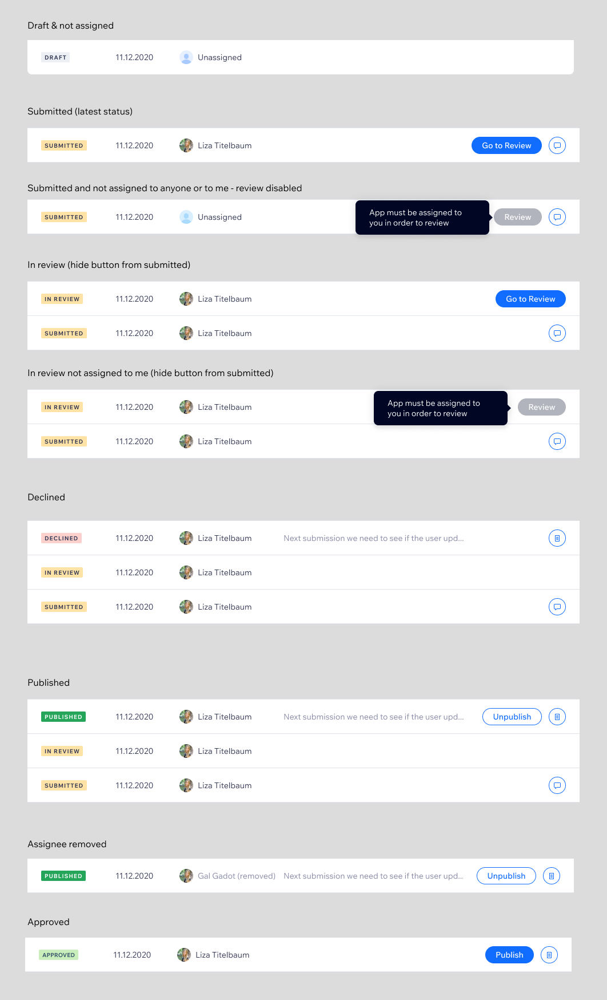
All statuses and their actionsEvery status the app can be in, and what a reviewer can do from there.
Review workflow
Commenting, flagging issues, and submitting the review in one place. Unlike the other three areas, this wasn't a redesign: it's a workspace built entirely from scratch to replace ad-hoc Google Doc reviews, answering the research finding that reviewers had no consistent way to structure a review.
Review report: Comments organized by path, flagging by typeThe structure a Google Doc could never enforce.
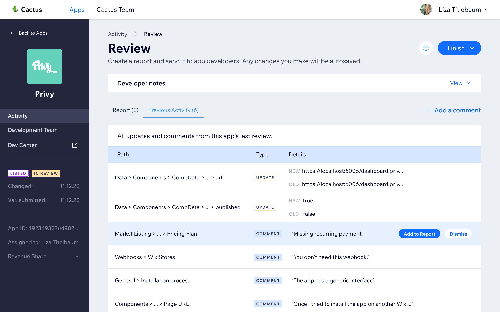
Previous activity tab: Last review surfaced for contextNo need to dig back through old documents to remember what was already said.
Adding comments
Comment types and blocker flags, plus a way to carry forward what wasn't resolved last time. Reviewers write once, and the report keeps the structure consistent for them.
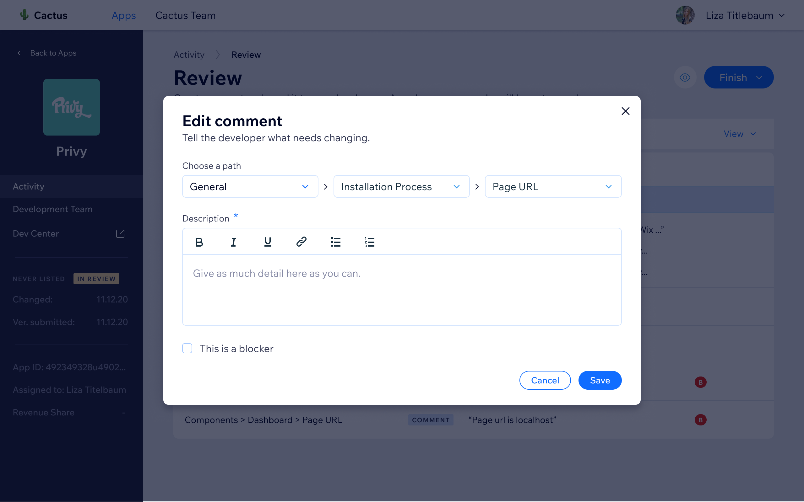
Adding a new comment with path, type, and blocker flagA blocker flag stops the app from publishing until it's resolved.
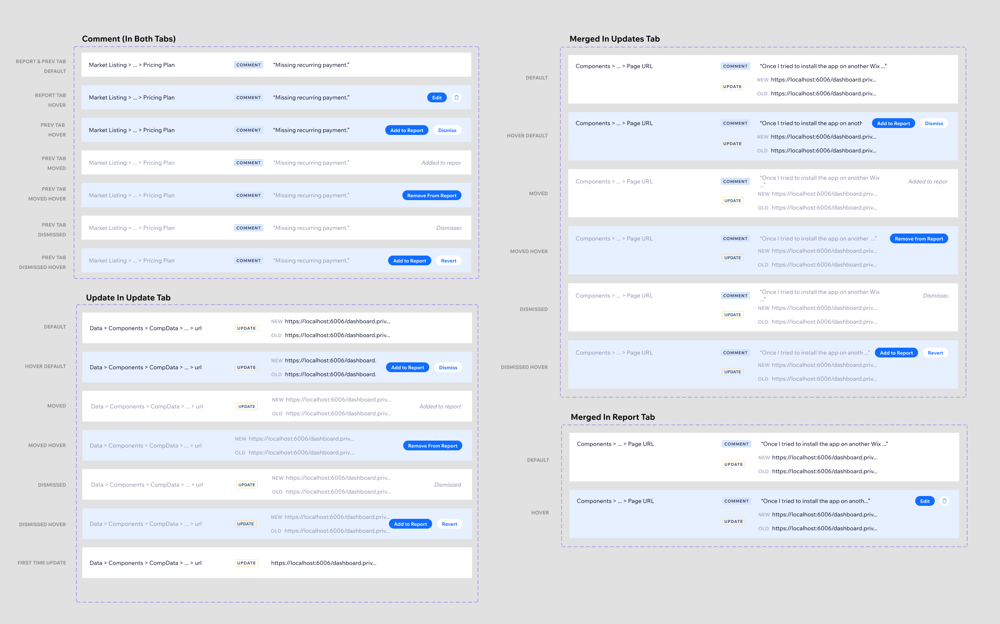
All comment typesOne fixed vocabulary, so severity reads the same across every reviewer.
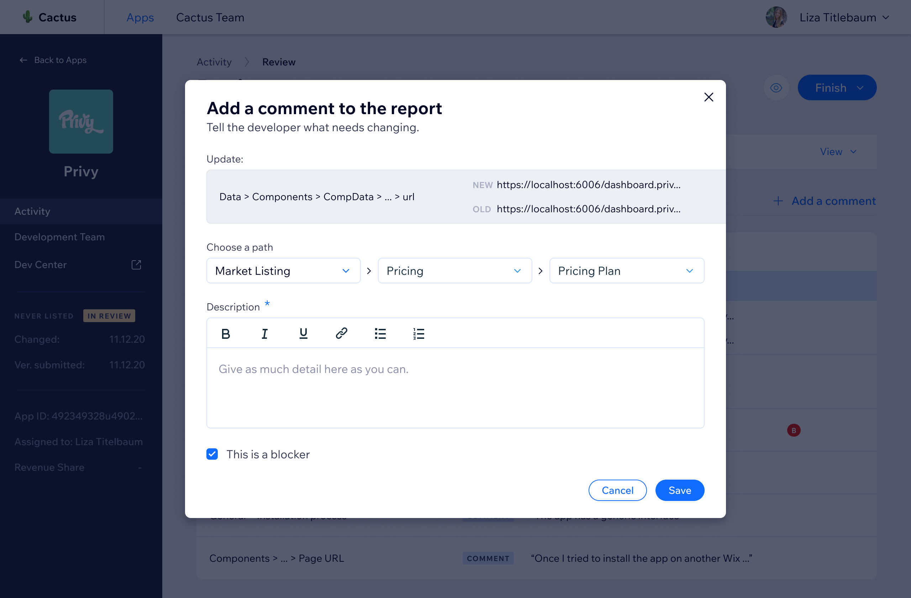
Moving an unhandled comment from a previous reviewNothing a developer missed carries over silently.
Publish flow
The last step before publishing to the marketplace. Everything from the review workspace carries through, so nothing ships outside the process.
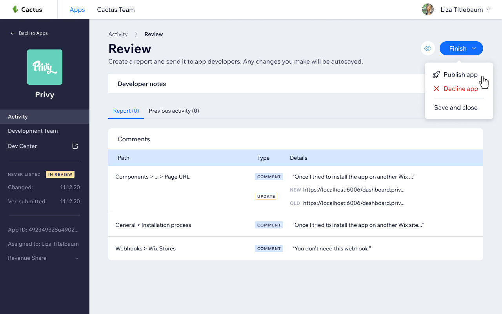
Opening the publish action from the app's more actions menuOne entry point, not a separate tool.
 App successfully published, marked as "listed"The status every other view in the platform now reflects.
App successfully published, marked as "listed"The status every other view in the platform now reflects.
The publish wizard
Three steps built right into the flow: revenue share, review report, then an internal note. A paper trail that used to live in a Google Doc now travels with the app automatically.
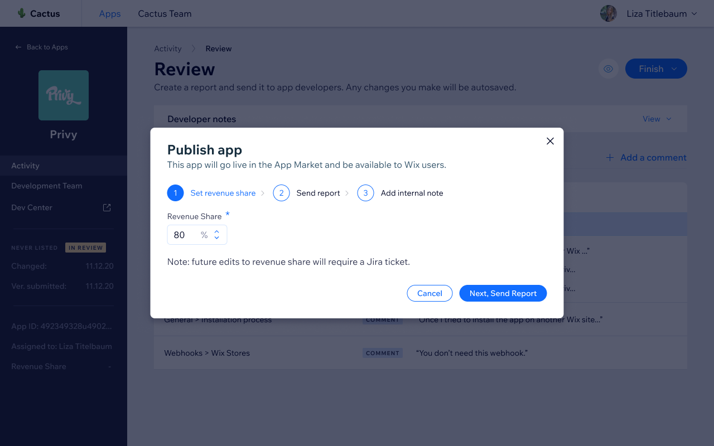
1. Revenue share agreement shown before confirmingSurfaced once, at the moment it actually matters.
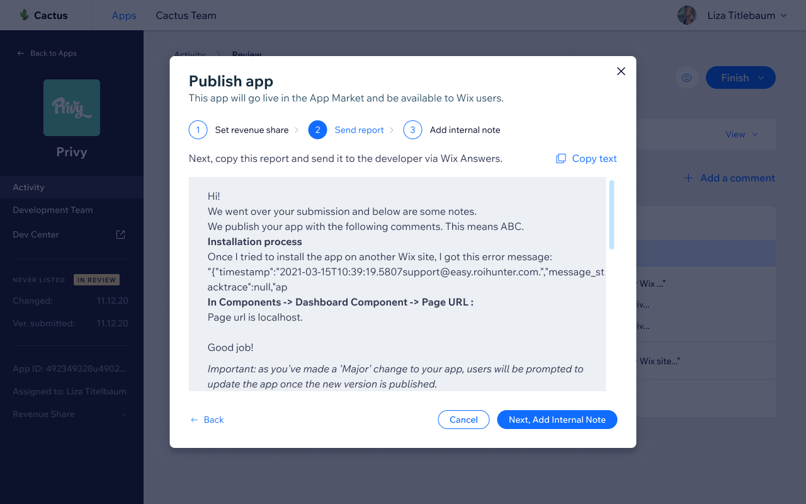
2. Review report attached to the publish actionThe full review history stays with the decision, not in a separate document.
 3. Adding an internal note before publishingContext for the next reviewer, not just the developer.
3. Adding an internal note before publishingContext for the next reviewer, not just the developer.
Team management & roles
Role-based access for the review team, closing the handoff gap: who owns which review, and what they're allowed to touch. The access model research showed the old process never had.
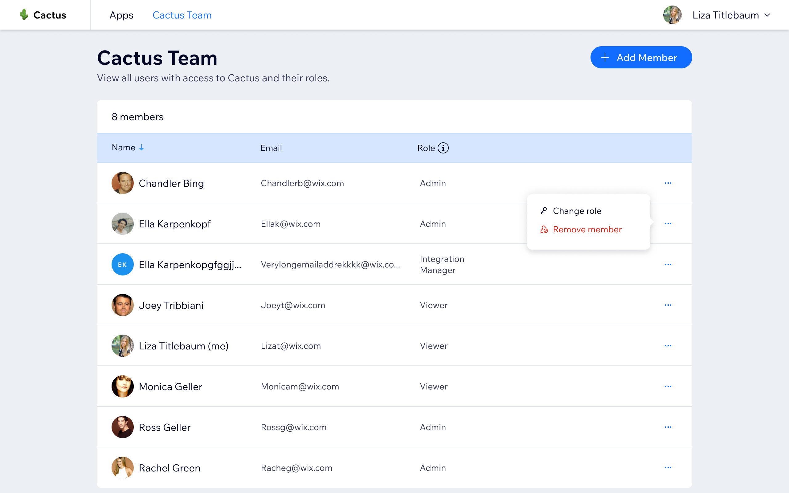
All review team members, their roles and emailsOne roster instead of asking around to find out who's who.
 Four role types control what each member can doAccess matched to responsibility, not granted by default.
Four role types control what each member can doAccess matched to responsibility, not granted by default.
 Viewer role: Preview only, no changesVisibility without the risk of an accidental edit.
Viewer role: Preview only, no changesVisibility without the risk of an accidental edit.
Impact
The tool is still actively used by Wix's Developer Relations team. It reduced account manager workload, shortened both the review cycle and time to publish, and made app evaluations faster and more consistent across the team.
The team had already voted with their feet, doing the actual review work in spreadsheets outside the platform. Success wasn't launching a redesign; it was building something good enough that they'd stop reaching for Google Docs. The tool became their primary review surface, which is the only metric that actually mattered.